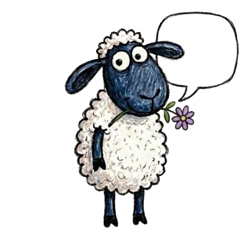

A daily search · Luke 15:3–7
One sheep is lost. The 99 are safe.
Help the Shepherd find the one. Every answer is a trip out into the pasture. The deeper your answer, the further he can search.

The 100th Sheep: an answer fewer than 1 in 100 players found.
How to playSix rings of pasture,
one lost sheep
Rarity is the share of players who gave the same answer to the same prompt. Say what everyone says and the Shepherd stays by the fold. Say what almost nobody says and he walks all the way out to the starlit edge.
- 10
The Fold
20% or more said it
Warm and golden. The 99 are safe here.
- 15
The Gate
10 to 20%
"14% of players also thought they were being clever."
- 30
Green Pastures
5 to 10%
Solid, everyday Bible knowledge.
- 60
Rocky Hills
2.5 to 5%
Deeper recall.
- 85
Dark Ravine
1 to 2.5%
Real deep cuts.
- 100
The 100th Sheep
Under 1%
Literally one sheep in a hundred. He carries it home.
Thirty-five seconds
a round
Seven prompts, one answer each. The bar below is drawn to scale.
- 3sReadThe prompt appears.
- 25sAnswerType one answer. Lock it in early if you're sure. No autocomplete, because it would give the answers away.
- ≤3sCheck"Did you mean Zerubbabel?" One tap. The clock waits.
- 5sRevealYour Shepherd walks out. Verse, percentage, and one deep cut you can learn from.
Mephibosheth.
Nebuchadnezzar.
Zerubabel
Small spelling mistakes are forgiven.
“What man of you, having a hundred sheep, if he has lost one of them, does not leave the ninety-nine in the wilderness, and go after the one which is lost, until he finds it?”
Luke 15:4
Nobody in this game strays. The sheep is already lost when you arrive. Your answers are the Shepherd's lantern, and each one lights a little more of the ground.
“I will seek the lost.” Ezekiel 34:16
Famous names that
never made it in
Answers come from the 73 books of the Catholic Bible. Tobit, Judith, the Maccabees, Wisdom, Sirach and Baruch all count in full. Tradition is beautiful, but it lands in the Thornbush.
- Caspar, Melchior, BalthasarMatthew 2:1 just says “wise men from the East.”
- DismasThe good thief has no name in Luke 23.
- LonginusThe centurion at the cross is never named (Mark 15:39).
- Anne & JoachimMary's parents come from the Protoevangelium of James.
- the appleGenesis 3:6 only says “the fruit.”
Every prompt ships with written rulings. Judge of Israel: Eli and Samuel count, Barak doesn't. Apostle: Matthias counts. Paul counts, with a note.
Party rooms
2 to 30 players, one code, one sheep. All the Shepherds walk out together, so you see the collisions as they happen.
- Lone Sheep
- +10
- Nobody else in the room said it. A tiebreak, not the main score.
- Crowd Collision
- ½
- Two or more of you said the same thing. Each gets half the ring points.
- Shepherd's Rescue
- +1 ring
- If nobody finds the 100th Sheep, last place's Shepherd steps one ring further out.